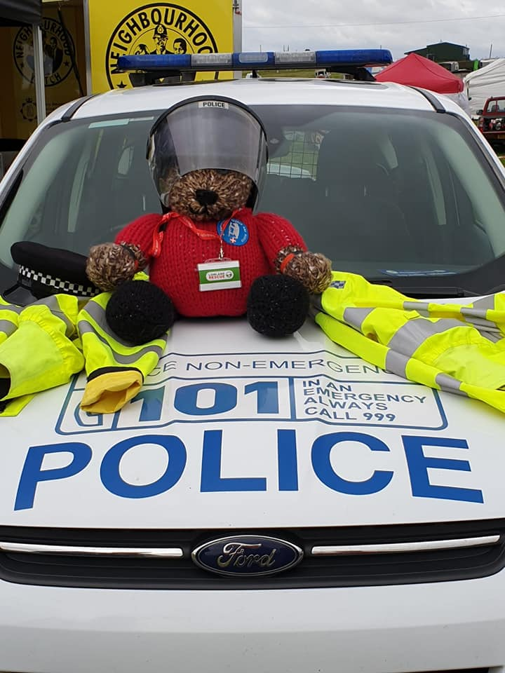
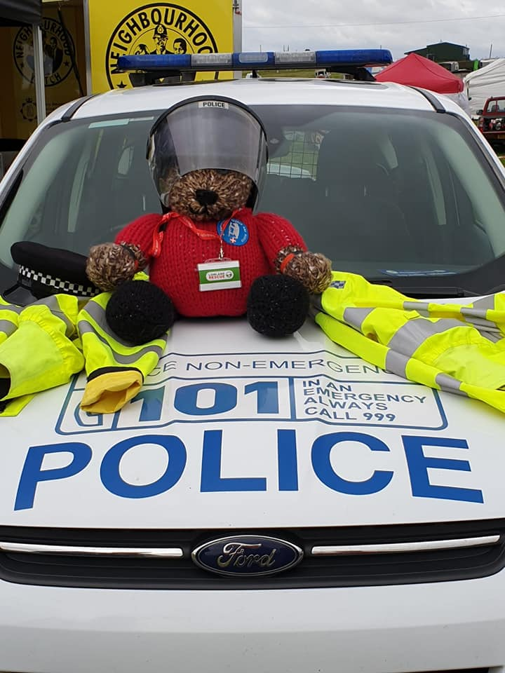
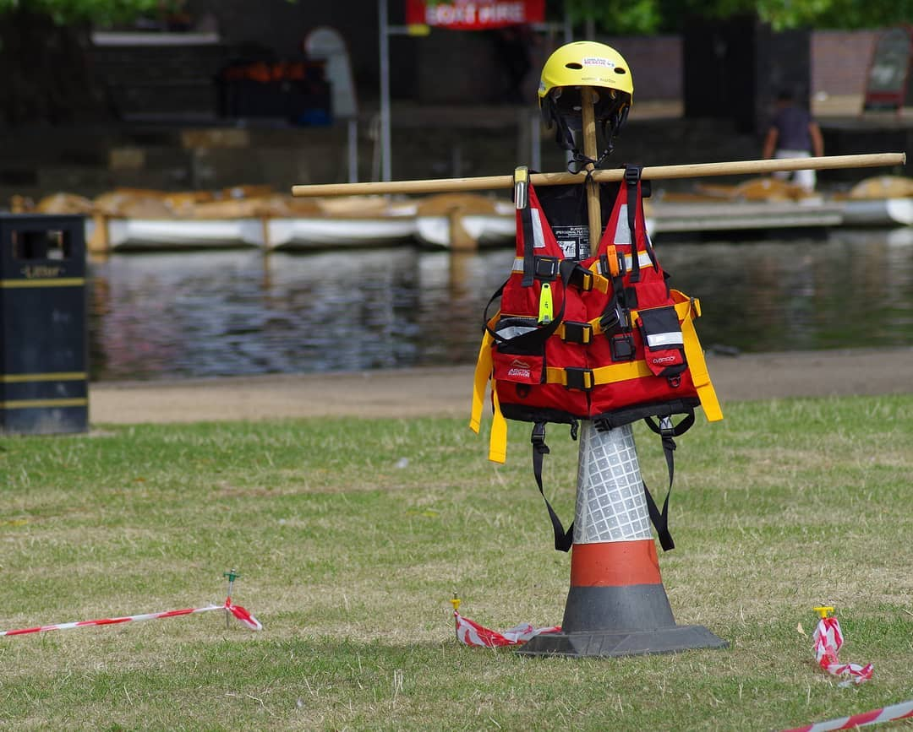
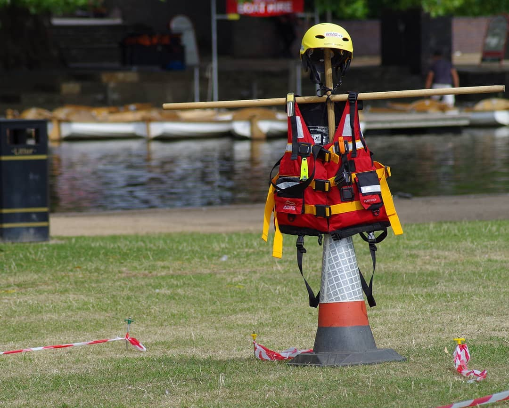

Call to Action
Lowland Rescue Team
100% Volunteers
24 Hours a Day 365 Days a Year
From Hill to Highwater
Lowland Rescue Team
100% Volunteers
24 Hours a Day 365 Days a Year
From Hill to Highwater
In a typical year around 700 people go missing in Warwickshire, the equivalent of two people every day. Thankfully many missing people soon return safe and well to their friends and family. When they do not, often because they suffer from a form of dementia or wish to harm themselves, Warwickshire Search and Rescue are there to support the Police in finding those people.
... to Sally Phillips about the importance of the work done by Warwickshire Search and Rescue.
... how to setup the Incident Control Unit, in double-quick time. The ICU is the nerve-centre of any search, co-ordinating the activity and communications across the search teams and other services.

Search and Rescue teams are members of the Association of Lowland Search and Rescue (ALSAR). ALSAR set the training standards that we all have to reach, and the code of practice that we use, working alongside the police. With Mountain Rescue England and Wales (MREW), Mountain Rescue Committee of Scotland (MRC of S), and the British Cave Rescue Council (BCRC), ALSAR members are nationally recognised as part of UKSAR capability.

Team members are unpaid volunteers from all walks of life, from 18 to 80 years old. We are available to respond to callouts 24 hours a day, 7 days a week, every day of the year. As well as search management personnel, team leaders and search technicians, Warwickshire Search and Rescue also has a search dog team and a specialist kayak team. To learn more about the roles within our team, or to find out how to join the team, click here.
With over 30 trainees looking to join the 35 operational members 2021 will be an active year. Also, we are hoping to start the creation of our own drone team.
In a year dominated by Covid-19 Warwickshire Search and Rescue were called out to over 50 incidents in the year. The busiest year the team have known.
With over 140 training exercises, and over 40 call-outs Warwickshire Search and Rescue provided invaluable support to the local community.
In June 2018 Warwickshire Search and Rescue reached an important milestone by responding to their 100th callout.
The 74 members of the team attended 362 fundraising events, near to an event for every day.
The search and rescue team completed over 700 horus of training and attended 23 call-outs.
With 16 call-outs and over 380 fundraising events, Warwickshire Search and Rescue continued to grow its presence and have an increasing impact in the county.
Training search dogs takes many years, in 2014 Warwickshire Search and Rescue started the journey to creating their own dog search team.
In 2013 Warwickshire Search and Rescue was established. By the end of the year there were 20 members, of whom five became operational in that year.
If the missing person is in immediate danger, is a young child or vulnerable to harm, call 999 now.
Warwickshire Search and Rescue are only called out by the police, not directly by members of the public
At Warwickshire Search and Rescue we rely on charitable funding. If you want to work with us on a fund-rasing activity then please get in touch.

If you have a question about our organisation, but are not sure who to contact, then please use our general email and we will direct it to the right person.
Ian Malins is the current Chair of Warwickshire Search and Rescue. Ian is a Trustee, Search Planner, Team Leader and long-standing Search Technician.
Lowland Rescue work is very rewarding and demanding. Applicants need to consider if they can commit to regular training and assist with other essential activities. See some of the key roles below.

Search Technician
All members complete the national Lowland Rescue curriculum, including search techniques, casualty care, health and safety, communications, navigation and working with the emergency services. You may also want to gain additional specialist search skills. To completed all aspects of the training, and become a qualified Search Technician, will take a minimum of six months.

Team Leader
Further training is required to become a Lowland Rescue Team Leader, who can safely and effectively lead a team of Search Technicians, and manage any situations that arise. Team Leaders plan how to search particular areas and co-ordinate relevant activities such as, medical assistance, managing the extrication of an individual, or controlling a crime scene, before the police arrive.

Search Operations Manager
Once fully trained you can take on the Search Operations Manager role, handling all the logistics of a search. This includes managing and co-ordinating resources, whether that's human resources, or vital tools to aid the search, such as maps, radios, and medical equipment. The Search Manager assesses the people available for the search, divides them into teams, briefs the team leaders and ensures they have everything they need.
Search Planner
Search Planners must study missing person behaviour in more depth. Planners gather the information about the missing person from the police, and use their in depth knowledge of missing person behaviour and search techniques, to plan and prioritise the search areas. They analyse behavioural statistics for different types of missing person and plan accordingly. The Search Planner may also have to attend court hearings.

Search Manager
Someone who is qualified to perform both the Search Planner and Search Operations roles is known as a Search Manager.
Once operational you will be called out in the middle of the night in all weathers? You might need to deal with potentially dangerous situations, and still keep yourself and your team members safe? You will also need to buy personal kit and fund your own travel? If you can make the commitment and see yourself as a Search Technician, wanting to also undertake other roles, then please get in touch.
Warwickshire Search and Rescue Team is an operational Lowland Rescue team, set up to assist the Police with searches for vulnerable missing persons within Warwickshire, and beyond. Our team is part of a much bigger family of 36 Lowland Rescue teams in the UK.

Most searches are conducted on-foot. Even those that use, or are led by, other teams will nearly always have on on-foot element. It would be extremely rare for a search to be successfully concluded without a team of on-foot search technicians reaching the person.
The Kayak Search Team is a dedicated team of highly competent kayakers. All team members are operational Lowland Search Technicians, with additional skills for the water. All are skilled paddlers, capable of using a range of craft. Most of the team are active white water paddlers, and all are coaches with British Canoeing Safety and Rescue qualifications.
Search dogs search areas that are difficult for human teams to search, such as dense woodland and difficult terrain, or to cover larger areas more quickly. As with the foot teams, they look for vulnerable missing people, such as children, those suffering from mental illness and despondent people, who may wish to harm themselves.
The water team is made up of Swiftwater and Flood Rescue Technicians, supported by trained Swiftwater and Flood First Responders. The water team also has a number of powerboat coxwains.

The drone search team is made up of pilots trained to the national Lowland Rescue standard and many have additional professional expertise in drone operations.
Warwickshire Search and Rescue 24/2/21
Midshires Search and Rescue 20/2/21
Warwickshire Search and Rescue 15/2/21
Warwickshire Search and Rescue June 2020
Warwickshire Search and Rescue 12/2/21
Leamington Observer 26/1/21

Leamington Observer 20/1/21

Give Covid the Boot April 2020

 



 



Every member of Warwickshire Search and Rescue is a volunteer, and the only way we can continue to operate is with your help and support. Each team member pays for their own clothing, fuel and equipment, but your support helps keep our Incident Control Vehicle running, provides essential training and helps us purchase vital equipment, such as communications equipment, GPS navigation and medical kits.
No matter how small, personal donations help to keep the team running.
To perform an online transfer please click on the link below, and you will be sent banking details.

You can make a donation by using the Paypal button, you don't need a Paypal account to do this.

Easyfundraising is a great way to raise money. Shop online with over 2,700 retailers and they will give a donation, at no cost to you, every time you buy.